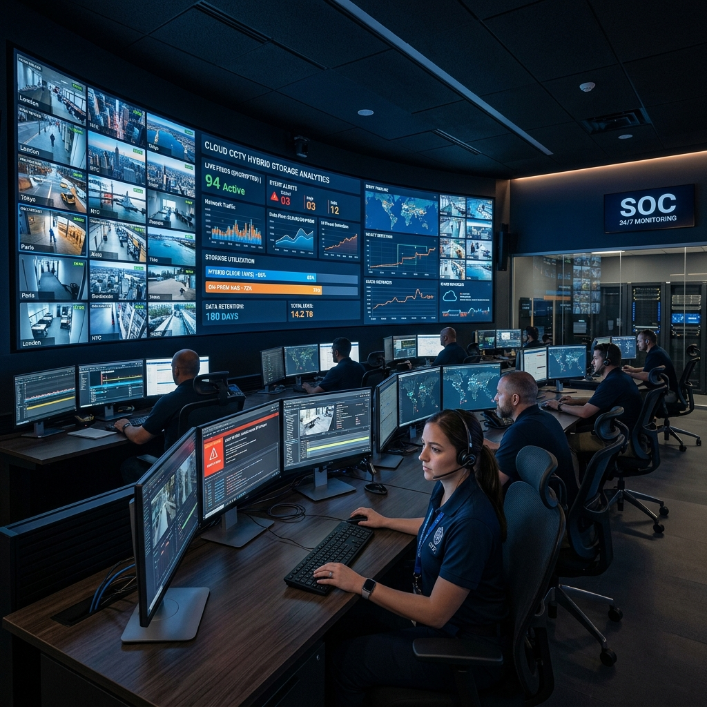

Cloud-Managed CCTV Architectures: 2026 Hybrid Video Storage & VSaaS

1. Executive Summary: The Cloud Video Paradigm Shift
The management and archiving of commercial surveillance video across multi-site enterprises, retail chains, and corporate campuses has undergone a fundamental architectural transformation. For decades, commercial CCTV deployments relied exclusively on decentralized, on-premise Network Video Recorders (NVRs) or expensive, centralized Video Management System (VMS) server farms. These legacy on-premise architectures represent a severe operational bottleneck and security vulnerability. Physical NVRs are highly susceptible to catastrophic hard drive failures, localized flood or fire damage, and intentional physical theft or tampering during a burglary event, resulting in the permanent loss of court-admissible evidentiary footage.
Furthermore, managing dozens of standalone NVRs across distributed geographic locations introduces immense IT maintenance overhead. Security directors are forced to manage complex firewall port-forwarding rules, maintain dynamic DNS registries, and manually deploy critical firmware security patches to prevent peripheral recording hardware from being co-opted by automated IoT botnets.
```
+------------------------+-----------------------------------+-----------------------------------+
| Architectural Metric | Legacy On-Premise NVR / VMS | 2026 Hybrid Cloud CCTV (VSaaS) |
+------------------------+-----------------------------------+-----------------------------------+
| Primary Video Storage | Local Hard Drives (Vulnerable) | Hybrid: Camera Edge SD + Cloud |
| Single Point of Failure| High (NVR theft destroys video) | Zero (Redundant Cloud Archiving) |
| WAN Bandwidth Impact | Uncontrolled / High Continuous | Smart Throttling & Scheduled Sync |
| Remote Access Security | Vulnerable Port Forwarding / DDNS | Outbound-Only TLS 1.3 Micro-Tunnels|
| Firmware Management | Manual / Decentralized | Automated Centralized Cloud Push |
+------------------------+-----------------------------------+-----------------------------------+
```
This comprehensive architectural guide establishes the definitive 2026 engineering standards for cloud-managed CCTV architectures and Video Surveillance as a Service (VSaaS). Security directors, IT infrastructure managers, and system integrators will explore the advanced hybrid storage mechanics, smart bandwidth throttling schedules, and end-to-end TLS 1.3 cryptographic protocols required to deploy highly resilient, secure, and infinitely scalable enterprise cloud surveillance grids.
2. Hybrid Video Storage & Direct-to-Cloud VSaaS Mechanics
The defining architectural breakthrough of 2026 enterprise cloud surveillance is the widespread adoption of Hybrid Video Storage topologies, combining high-reliability camera edge buffering with secure, redundant cloud archiving.
```
+-------------------------------------------------------------------+
| Enterprise Hybrid Cloud CCTV Storage & Archiving Topology |
+-------------------------------------------------------------------+
| +---------------------------+ +---------------------------+ |
| | IP Camera Edge Buffer | --> | Primary Storage: 256GB | |
| | (Hikvision / Eagle Eye) | | Industrial MicroSDXC Card | |
| +---------------------------+ +---------------------------+ |
| | | |
| [ Smart Bandwidth Throttling & Scheduled Sync Engine ] |
| | | |
| +---------------------------+ +---------------------------+ |
| | Outbound TLS 1.3 Tunnel | --> | Redundant Cloud Archive | |
| | (Zero Port Forwarding) | | (AWS / Azure VSaaS Vault) | |
| +---------------------------+ +---------------------------+ |
+-------------------------------------------------------------------+
```
Direct-to-Cloud vs. Cloud-Managed NVR Architectures
Modern enterprise VSaaS platforms (such as Eagle Eye Networks, Verkada, or cloud-enabled Hikvision Pro series) operate across two primary deployment topologies:
Camera Edge Buffering (Industrial MicroSDXC)
To ensure absolute video retention during unexpected external internet (WAN) outages, 2026 Direct-to-Cloud architectures mandate robust Camera Edge Buffering. Every cloud-enabled IP camera must be equipped with an industrial-grade, high-endurance MicroSDXC storage card (typically `256GB to 512GB` featuring MLC NAND flash engineered for continuous write cycles).
```
+-------------------------------------------------------------------+
| Camera Edge Buffering & Automated Cloud Recovery Workflow |
+-------------------------------------------------------------------+
| 1. External ISP Fiber Connection fails at 14:22 (WAN Outage) |
| 2. IP Camera detects loss of cloud heartbeat |
| 3. Camera instantly shunts active 4K video stream to internal SD |
| 4. Camera operates in autonomous edge storage mode for 6 hours |
| 5. ISP Fiber Connection restored at 20:15 |
| 6. Camera re-establishes TLS 1.3 cloud tunnel & executes trickle |
| background sync to upload missing 6-hour video block |
+-------------------------------------------------------------------+
```
When the facility's external internet connection fails, the camera's internal operating system instantly detects the loss of the cloud heartbeat. The camera autonomously shunts the active video recording stream directly to the internal MicroSDXC card, buffering days of continuous high-definition footage locally. Once the external WAN connection is restored, the camera automatically re-establishes its secure cloud tunnel and executes a background "trickle sync," uploading the missing video blocks to the cloud vault without disrupting live streaming operations.
3. Smart Bandwidth Throttling & Scheduled Cloud Synchronization
A primary operational challenge of deploying cloud CCTV across commercial enterprises is managing Wide Area Network (WAN) bandwidth consumption. Streaming dozens of continuous 4K video feeds to the cloud can easily saturate an enterprise fiber circuit, causing severe latency spikes for mission-critical corporate cloud applications, VoIP telephony, and database transactions.
```
+------------------------+-----------------------------------+-----------------------------------+
| Bandwidth Management | Legacy Continuous Cloud Stream | 2026 Smart Throttling & Scheduling|
+------------------------+-----------------------------------+-----------------------------------+
| Business Hours (8a-6p) | Uncontrolled High Bandwidth | Throttled Sub-Stream + AI Clips |
| Off-Hours (6p-8a) | Uncontrolled High Bandwidth | Uncapped Full 4K Background Sync |
| Active Event Triggers | Standard Streaming Rate | Priority High-Bitrate Burst |
| WAN Circuit Saturation | High Risk during Peak Operations | Near-Zero (Strict QoS Governors) |
+------------------------+-----------------------------------+-----------------------------------+
```
Dynamic Bandwidth Throttling Schedules
To protect corporate network performance, enterprise VSaaS platforms implement sophisticated Smart Bandwidth Throttling Schedules. Network architects configure strict, time-based Quality of Service (QoS) bandwidth governors within the cloud management dashboard.
During peak business operating hours (e.g., `08:00 to 18:00`), the VSaaS platform aggressively throttles outgoing CCTV traffic. Cameras are configured to transmit only ultra-lightweight video sub-streams (`e.g., 720p at 10 fps consuming <500 Kbps per camera`) to the cloud for live situational awareness, while the primary, uncompressed 4K video streams are stored locally on the camera's internal MicroSDXC buffer or local bridge appliance.
Off-Hours Background Trickle Synchronization
Once the facility transitions to off-peak operational hours (`e.g., 18:00 to 08:00`), the cloud management dashboard automatically lifts the bandwidth governors. The cameras and bridge appliances autonomously initiate high-speed background trickle synchronization, utilizing the full, uncapped capacity of the enterprise fiber circuit to upload the full-resolution 4K primary video files captured during the day to the secure cloud vault.
Furthermore, bandwidth schedules are dynamically overridden by AI Event Triggers. If an edge camera's Neural Processing Unit (NPU) detects a critical security anomaly during business hours—such as a line crossing breach, active loitering, or a tamper attempt—the camera instantly overrides the local bandwidth throttle, bursting a high-bitrate, full-resolution 4K video clip of the incident directly to the cloud vault to ensure immediate, pristine verification for ARC operators.
4. End-to-End TLS 1.3 Encryption & Zero Port Forwarding
Securing enterprise cloud surveillance infrastructure requires replacing obsolete, vulnerable remote access methodologies with zero-trust cryptographic micro-tunnels and end-to-end video encryption.
```
+-------------------------------------------------------------------+
| Outbound-Only TLS 1.3 Micro-Tunnel Architecture |
+-------------------------------------------------------------------+
| |
| [ Enterprise IP Camera ] |
| | |
| |-- ( Initiates Outbound TCP Port 443 Request ) --> |
| | |
| [ Enterprise Next-Generation Firewall (NGFW) ] |
| | ( Inspects Outbound Certificate Handshake ) |
| v |
| [ VSaaS Cloud Vault (AWS / Azure) ] |
| |
| * Security Benefit: Zero Inbound Firewall Ports Opened * |
+-------------------------------------------------------------------+
```
Eliminating Inbound Port Forwarding & DDNS
In legacy CCTV installations, enabling remote mobile viewing required security technicians to configure inbound port forwarding rules (e.g., opening TCP ports `80, 8000, or 554`) across the facility's perimeter firewall, frequently paired with unencrypted Dynamic DNS (DDNS) registries. This practice represents an egregious security violation, exposing the internal recording hardware directly to automated public internet port scanners and brute-force botnets.
2026 enterprise VSaaS architectures operate on a strict Outbound-Only Communication architecture. Cloud-enabled cameras and bridge appliances require zero inbound firewall ports to be opened. When powered on, the camera initiates an outbound TCP connection over Port 443 directly to the VSaaS cloud vault. Once this outbound micro-tunnel is established, all bi-directional command and control traffic, live video streaming, and firmware updates flow exclusively through this encrypted conduit, leaving the enterprise perimeter firewall completely sealed against external inbound scanning.
End-to-End TLS 1.3 & AES-256 Video Encryption
To guarantee absolute data confidentiality and comply with strict statutory privacy mandates (such as ICO GDPR guidelines and HIPAA regulations), enterprise VSaaS platforms enforce rigorous End-to-End Encryption across the entire video lifecycle.
```
+------------------------+-----------------------------------+-----------------------------------+
| Cryptographic Layer | Legacy On-Premise NVR | 2026 Enterprise VSaaS Platform |
+------------------------+-----------------------------------+-----------------------------------+
| Data-in-Transit | Unencrypted HTTP / RTSP Streams | Mandatory TLS 1.3 (AES-GCM 256) |
| Data-at-Rest (Local) | Unencrypted Hard Drives | AES-256 Hardware Disk Encryption |
| Data-at-Rest (Cloud) | Unencrypted Storage Buckets | AES-256 Cloud Vault Encryption |
| Evidentiary Integrity | Vulnerable to video splicing | SHA-256 Cryptographic Hashing |
+------------------------+-----------------------------------+-----------------------------------+
```
All video data-in-transit streaming from the camera to the cloud vault is encapsulated within mandatory Transport Layer Security (TLS 1.3) protocols utilizing AES-GCM 256-bit encryption and Ephemeral Diffie-Hellman (ECDHE) perfect forward secrecy.
Simultaneously, all video data-at-rest stored within the cloud vault or buffered on the camera's internal MicroSDXC card is encrypted at the storage volume level utilizing AES-256. This cryptographic architecture ensures that even if an advanced threat actor intercepts the physical WAN transmission line or physically steals the camera's internal SD card, the video footage remains entirely unreadable, safeguarding corporate privacy and preserving evidentiary chain of custody.
5. Comprehensive Expert Frequently Asked Questions
What is the exact difference between Direct-to-Cloud and Cloud-Managed Hybrid NVR surveillance architectures?
Direct-to-Cloud (Camera-to-Cloud) architectures eliminate on-premise recording servers entirely; IP cameras connect directly to the enterprise switch and stream video over outbound cryptographic tunnels directly to cloud storage, making it highly cost-effective for distributed multi-site enterprises with low camera counts per site. Cloud-Managed Hybrid NVR architectures utilize an on-premise bridge appliance or cloud NVR to ingest high-bandwidth 4K video from dozens of local cameras, storing primary footage on local surveillance drives while streaming lightweight sub-streams and AI event clips to the cloud dashboard. This topology is mandatory for high-density corporate headquarters to prevent local WAN bandwidth saturation.
How do cloud-enabled IP cameras maintain video recording integrity during a complete external WAN internet outage?
Cloud-enabled enterprise IP cameras maintain absolute video recording integrity during WAN outages through robust Camera Edge Buffering. Every camera is equipped with an industrial-grade, high-endurance MicroSDXC storage card (typically 256GB to 512GB). When the external internet connection fails, the camera detects the loss of the cloud heartbeat and autonomously shunts the active 4K video stream directly to the internal SD card buffer. Once the external fiber connection is restored, the camera automatically re-establishes its secure TLS 1.3 cloud tunnel and executes a background trickle sync, uploading the missing video blocks to the cloud vault without disrupting live streaming.
How do Smart Bandwidth Throttling Schedules prevent CCTV streams from saturating enterprise fiber circuits?
Smart Bandwidth Throttling Schedules allow network architects to configure strict, time-based Quality of Service (QoS) governors within the cloud CCTV dashboard to protect corporate network performance. During peak business hours (e.g., `08:00 to 18:00`), outgoing CCTV traffic is aggressively throttled; cameras transmit only ultra-lightweight video sub-streams (`<500 Kbps`) to the cloud for live situational awareness, while primary 4K footage is buffered locally. During off-peak hours (`18:00 to 08:00`), the governors are automatically lifted, and cameras execute high-speed background trickle synchronization utilizing the uncapped fiber circuit to upload full-resolution primary video files to the cloud vault.
Why is eliminating inbound port forwarding and DDNS critical for commercial CCTV cybersecurity?
In legacy CCTV installations, enabling remote mobile viewing required technicians to configure inbound port forwarding rules (opening TCP ports `80, 8000, or 554`) across the perimeter firewall, frequently paired with unencrypted Dynamic DNS (DDNS). This egregious practice exposed internal recording hardware directly to automated public internet port scanners, credential brute-forcing, and IoT botnets like Mirai. 2026 enterprise VSaaS architectures operate on an Outbound-Only communication model; cameras initiate secure outbound TCP Port 443 micro-tunnels directly to the cloud vault. Zero inbound firewall ports are opened, leaving the enterprise perimeter completely sealed against external scanning.
What are the mandatory cryptographic standards for securing cloud CCTV video data-in-transit and data-at-rest?
To guarantee absolute data confidentiality and comply with strict statutory privacy mandates (such as ICO GDPR guidelines and ISO 27001), enterprise VSaaS platforms enforce rigorous encryption across the entire video lifecycle. All video data-in-transit streaming from the camera to the cloud vault is encapsulated within mandatory Transport Layer Security (TLS 1.3) protocols utilizing AES-GCM 256-bit encryption and Ephemeral Diffie-Hellman (ECDHE) perfect forward secrecy. Simultaneously, all video data-at-rest stored within the cloud vault or buffered on the camera's internal MicroSDXC card is encrypted at the storage volume level utilizing AES-256, ensuring footage remains unreadable if physical hardware is stolen.